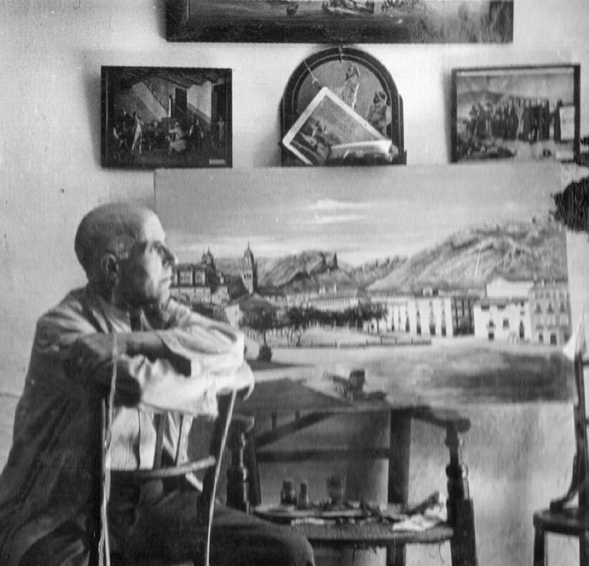
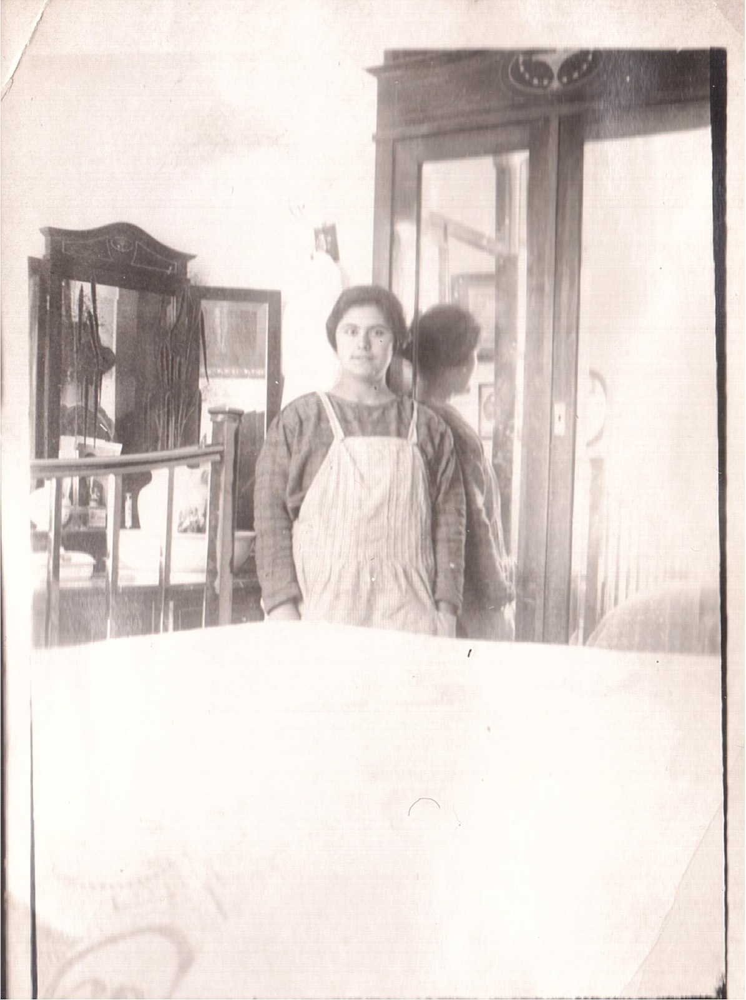
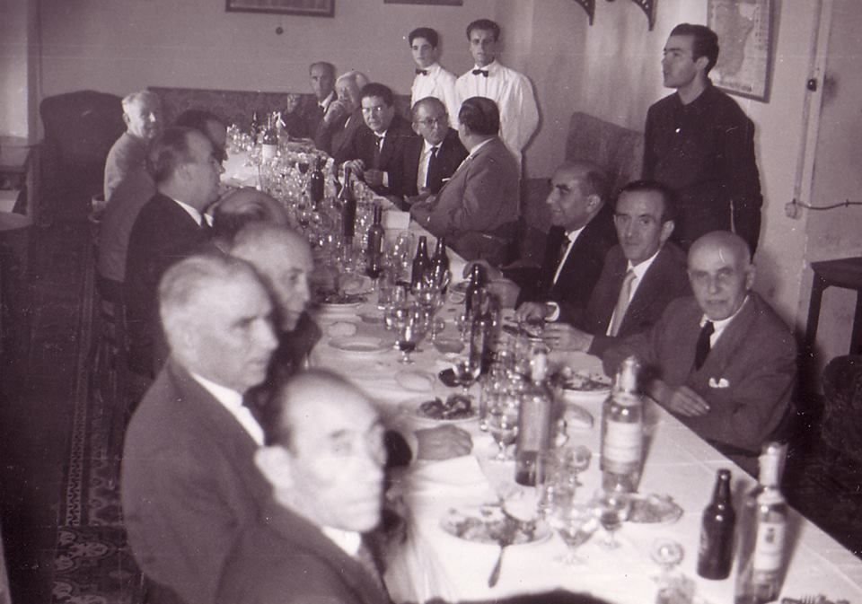

Foto de portada 1
Comentarios sobre la foto (Próximamente).
Esta web es un espacio dedicado a recordar y poner en valor la figura de mi abuelo, Don Camilo Amaro García, entrañable farmacéutico que durante décadas estuvo al frente de la botica de la calle Santa Ana en Huelma. Intelectual, procurador, juez de paz y un apasionado de la historia local, dejó una profunda huella en nuestro pueblo. El objetivo de este proyecto familiar es reunir y compartir todo su legado cultural y recuerdos:

Comentarios sobre la foto (Próximamente).

Comentarios sobre la foto (Próximamente).

Comentarios sobre la foto (Próximamente).

Comentarios sobre la foto (Próximamente).

De Izquierda a derecha: mi primo Andrés, mi tío Camilo, mi tía Ana, mi primo Rafael, mi hermano José Enrique, mi hermano Camilo y yo y finalmente mi tío Jose Ignacio (el del Sombrero).

Mis tíos y sus hijos Jose Ignacio y Camilo con la Alcaldesa y algunos miembros del Ayuntamiento en la Inauguración.

Inauguración Travesía Camilo Amaro
Familiares de Camilo Amaro García

Aenean ornare velit lacus, ac varius enim lorem ullamcorper dolore aliquam.
Si deseas realizar alguna consulta o detectas algún error de visualización en la página con tu navegador o dispositivo, te agradecería que te pusieras en contacto conmigo. Puedes hacerlo, preferiblemente, a través de la siguiente dirección de correo electrónico:
mangelamaro@hotmail.com
{kind=link}
{kind=link}
{kind=link}